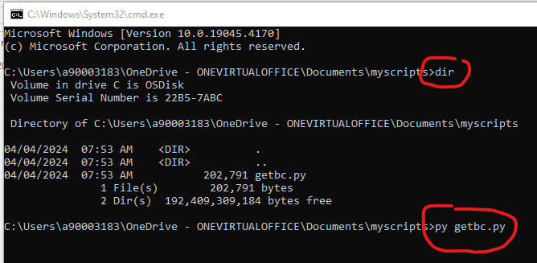

First you need install a python interpreter program. If you are an Atlas Copco employee, do this by installing Python 3.8.9 from Atlas Copco's Software Center App. Go to Start > Microsoft Configuration Manager > Software Center. Open and search for 'python'. You'll find 'Python 3.8.9'. Install it.
If you are not an Atlas Copco employee, or you want to install it on your home computer, go to https://www.python.org/. Install what they have to offer. (It's free).
Using Windows file explorer, go the the directory where getbc.py is located on your network. When there, in the address bar of file explorer type and enter 'cmd'. A cmd window will open:
It the cmd window type and enter the dir (directory) command to see the contents within that directory. You should see getbc.py listed there. Run getbc.py by entering the command: py getbc.py. Once entered, you will then be shown instructions about what to do next.
Note: If getbc.py is not on your network, you can get it from here: https://github.com/kcarlton55/getbc. Look for a button that says "<> Code". Click it, then click "Download zip". Open the zip file, look in the folder named src and get getbc.py from there. Place this file in a directory that you find convenient and then follow the steps listed above.